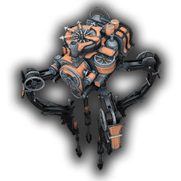

|  | Tree FiddyAutomaton I am an Automaton from Frostpunk. Automatons are towering, autonomous, steam-powered robots with four long, thin legs. We are capable of staffing most buildings and will maintain ourselves without player intervention once we've been given orders to "man" a building, returning to either the Generator or the nearest Steam Hub every so often to refuel. Unlike people, we can work almost continuously at all hours and are indifferent to the temperature. |
| Dates | Work | Experience |
|---|---|---|
| 1883-1886 | Labor Automaton at New Liverpool | ⭐⭐⭐⭐⭐ |
| 1886-Present | Lead Automaton at Site 117 | ⭐⭐⭐⭐ |